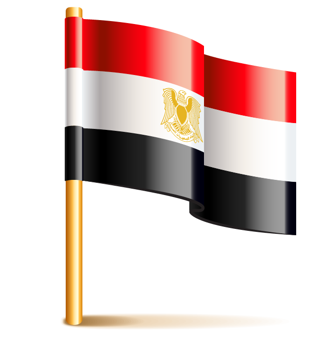

القاهرة هي عاصمة جمهورية مصر العربية وأكبر وأهم مدنها على الإطلاق، وتعد أكبر مدينة عربية من حيث تعداد السكان والمساحة، وتحتل المركز الثاني أفريقياً والسابع عشر عالمياً من حيث التعداد السكاني، يبلغ عدد سكانها 21,322,750 مليون نسمة حسب إحصائيات عام 2021. يمثلون 20% من إجمالي تعداد سكان مصر أكثر من (100 مليون نسمة)
تعد مدينة القاهرة من أكثر المدن تنوعاً ثقافياً وحضارياً، حيث شهدت العديد من الحقب التاريخية المختلفة على مر العصور، وتوجد فيها العديد من المعالم القديمة والحديثة، فأصبحت متحفاً مفتوحاً يضم آثاراً فرعونية ويونانية ورومانية وقبطية وإسلامية. يعود تاريخ المدينة إلى نشأة مدينة أون الفرعونية أو هليوبوليس «عين شمس حالياً» والتي تعد واحدة من أقدم مدن العالم القديم. أما القاهرة بطرازها الحالي فيعود تاريخ إنشائها إلى الفتح الإسلامي لمصر على يد عمرو بن العاص عام 641 م وإنشائه مدينة الفسطاط، ثم إنشاء العباسيين لمدينة العسكر، فبناء أحمد بن طولون لمدينة القطائع، ومع دخول الفاطميين مصر قادمين من إفريقية (تونس حالياً) بدأ القائد جوهر الصقلي في بناء العاصمة الجديدة للدولة الفاطمية بأمر من الخليفة الفاطمي المعز لدين الله وذلك في عام 969م، وأطلق عليها الخليفة اسم «القاهرة». وأطلق على القاهرة- على مر العصور- العديد من الأسماء، فهي مدينة الألف مئذنة ومصر المحروسة وقاهرة المعز. شهدت القاهرة خلال العصر الإسلامي أرقى فنون العمارة التي تمثلت في بناء القلاع والحصون والأسوار والمدارس والمساجد، مما منحها لمحةً جماليةً لا زالت موجودة بأحيائها القديمة حتى الآن.
وتعد القاهرة محافظة ومدينة، أي أنها محافظة تشغل كامل مساحتها مدينة واحدة، وفي نفس الوقت مدينة كبيرة تشكل محافظة بذاتها، وتنقسم إلى 37 حياً، وتحتفل القاهرة بعيدها القومي في 6 يوليو من كل عام، وهو اليوم الذي يوافق وضع القائد جوهر الصقلي حجر أساس المدينة عام 969م، ليبلغ عمر القاهرة الآن ما يربو على 1044 عام.
تعد القاهرة أيضاً مقراً للعديد من المنظمات الإقليمية والعالمية، حيث يقع بها مقر جامعة الدول العربية، والمكتب الإقليمي لكل من: منظمة الصحة العالمية، منظمة الأغذية والزراعة، منظمة الطيران المدني الدولي، الاتحاد الدولي للاتصالات، صندوق الأمم المتحدة للسكان، هيئة الأمم المتحدة للمرأة، مقر برنامج الأمم المتحدة الإنمائي، مكتب تنسيق الشؤون الإنسانية للأمم المتحدة، وكذلك مقر الاتحاد الأفريقي لكرة السلة.